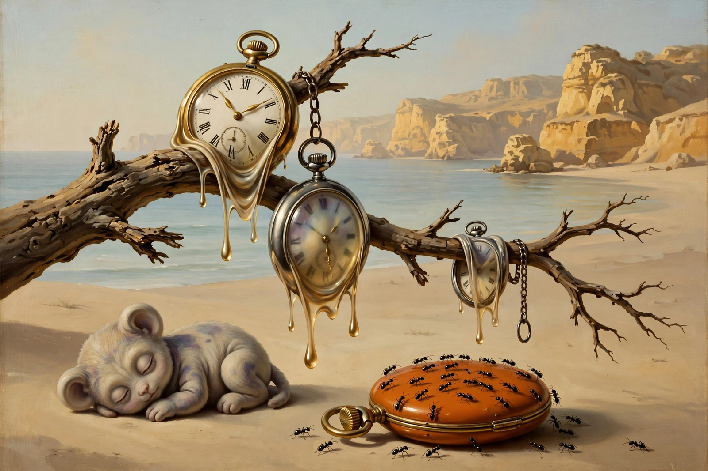

The Persistence of Memory
| The Persistence of Memory | |
|---|---|
| Artist | Salvador Dalí |
| Year | 1931 |
| Medium | Oil on canvas |
| Dimensions | 24 cm × 33 cm |
| Location | Museum of Modern Art (MoMA), New York |
The Persistence of Memory (Spanish: La persistencia de la memoria) is a 1931 painting by artist Salvador Dalí and one of the most recognisable works of Surrealism. The small canvas shows a dreamlike coastal landscape — based on the cliffs of Cape Creus near Dalí's home in Catalonia — in which several pocket watches melt and drape limply over a branch, a platform and a strange, soft central creature. First shown in Paris in 1931 and exhibited in New York the following year, it has been in the collection of the Museum of Modern Art since 1934.

Imagery and interpretations
Dalí described his method as "paranoiac-critical": painting dream images with photographic precision to make the irrational concrete. He said the melting watches were inspired not by relativity theory — though the painting is often read as a meditation on time's fluidity, painted 25 years after Einstein's theory of relativity — but by watching Camembert cheese melt in the sun. The limp watches may suggest the collapse of rigid, mechanical time in dreams; the ants swarming over one closed watch case evoke decay (ants were a recurring Dalí motif), and the fly on another watch adds to the atmosphere of stillness and rot. The distorted central form, with its long eyelash, is often read as a warped self-portrait.
Legacy
The painting made Dalí famous in America and fixed the "melting clock" as Surrealism's most durable icon, endlessly reproduced and parodied. It shares MoMA's walls with another icon of modernism painted four decades earlier, The Starry Night, and its dream logic stands in deliberate contrast to the raw psychological expression of The Scream.